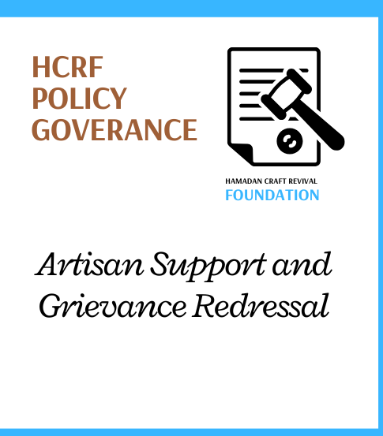
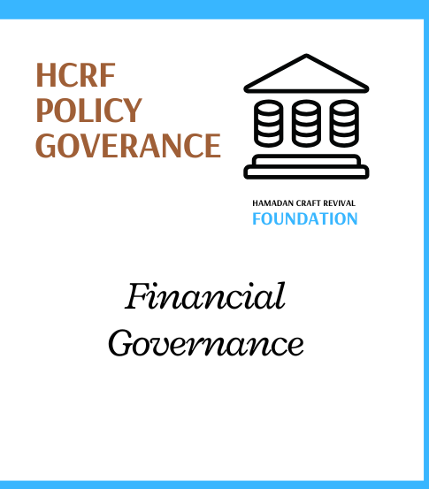

Governance

Governance that keeps Kashmiri crafts alive & thriving.
Kashmir Handicrafts Industry Governance Framework
The governance framework addresses core aspects such as artisan welfare, quality assurance, export facilitation, and financial empowerment, creating an ecosystem where traditional craftsmanship can thrive alongside modern market demands.
This framework strengthens the handicrafts sector's foundation by safeguarding the
rights of artisans, promoting
traditional skills, and ensuring the long-term sustainability and global competitiveness
of Kashmir’s cultural treasures
HCRF Policy Regulation
Administrative Governance
Administrative governance forms the backbone of the policy framework and oversight
mechanisms that guide the entire handicraft sector.
Ensures that the Kashmir handicrafts sector operates efficiently and in compliance
with government regulations.
Ministry of Textiles, Government of India: Oversees national-level
policy formulation and scheme implementation for the handicraft sector.
HCRF Policy Regulation
Capacity Building and Institutional Governance
Capacity building and institutional governance are essential for developing the
skills of artisans, modernizing production techniques, and ensuring competitiveness.
Empowers artisans with advanced skills and modern techniques while preserving
traditional craftsmanship.
Jammu & Kashmir Craft Development Institute (J&KCDI): Provides
specialized education and training to artisans.
HCRF Policy Regulation
Quality Control and Certification Governance
To ensure that Kashmiri handicrafts meet high standards of authenticity and quality,
while protecting them from counterfeit products through Geographical Indication (GI)
certification and other quality control measures.
The credibility and marketability of Kashmiri crafts are enhanced through strict
quality control, allowing genuine products to command higher prices in international
markets and safeguarding cultural heritage.
Geographical Indications Registry: Oversees GI certification for authentic Kashmiri
products like Pashmina and Kani shawls. Jammu & Kashmir Handicrafts Department:
Ensures the implementation of quality standards and controls at the production
level. Indian Institute of Carpet Technology (IICT): Plays a role in maintaining
high-quality standards in the carpet sector.

HCRF Policy Regulation
Artisan Support and Grievance Redressal
The artisan support and grievance redressal framework is designed to protect the
rights of artisans, provide them with essential welfare services, and ensure that
their complaints and grievances are addressed promptly and fairly.
Ensures that artisans have access to social security schemes, legal support, and
fair wages. Provides a robust grievance redressal mechanism to address issues such
as exploitation, counterfeit products, delayed payments, and other unfair practices.
Grievance Cells (Ministry of Textiles): These cells handle complaints related to
artisan welfare, delayed payments, and other grievances.
HCRF Policy Regulation
Financial Governance
To provide artisans with access to
low-interest loans, subsidies, and financial literacy programs to ensure their
businesses are sustainable and can scale up to meet demand.
Improved access to financial
resources allows artisans to invest in better tools, raw materials, and business
expansion, ensuring the sustainability of the handicraft sector. Financial
governance also ensures transparency in fund disbursement and accountability.
Artisan Credit Card (ACC) Scheme:
Provides artisans with low-interest loans to purchase raw materials and expand their
businesses. Jammu & Kashmir State Financial Support: Offers subsidies for
infrastructure, raw materials, and market expansion. Ministry of Textiles: Provides
access to financial schemes such as health insurance, pensions, and the ACC.

HCRF Policy Regulation
Export Promotion and Trade Facilitation
To expand the global reach of
Kashmiri handicrafts by simplifying export procedures, offering market linkages, and
promoting Kashmiri crafts in international markets.
Increased international demand for
Kashmiri crafts creates economic growth, higher earnings for artisans, and global
recognition of Kashmir’s rich craft heritage. It also enhances the region’s
reputation as a global hub for high-quality handicrafts.
Directorate General of Foreign
Trade (DGFT): Oversees the governance of trade facilitation and export promotion by
coordinating policies, providing export incentives, and ensuring that Kashmiri
handicrafts meet global trade standards.